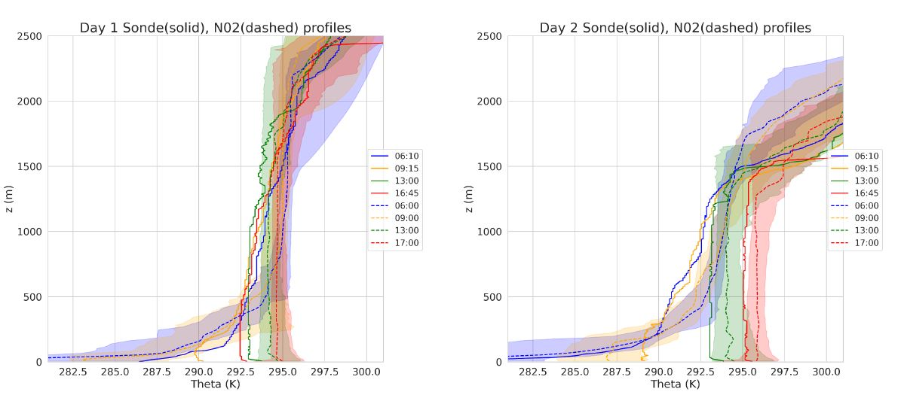
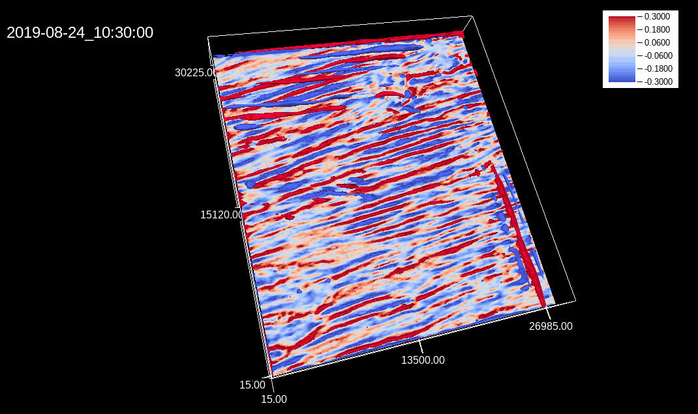

Large Eddy Simulations of surface heterogeneity induced secondary circulations

Numerous studies have hinted at the key role of land surface heterogeneities for developing secondary circulations in the atmospheric boundary layer. Observational studies and large eddy simulation (LES) models have been used to understand the role of these circulations in boundary-layer development, cloud processes, and documented biases in measurements such as eddy-covariance energy fluxes. However, these studies have been limited in their ability to capture these events and robustly test hypotheses.
I have been working with Luise Wanner at KIT and Dr. Matthias Suhring at IMUK Leibniz Universität Hannover to setup realistic simulations of the CHEESEHEAD19 field experiment days. The Parallelized LES Model PALM (Maronga et al. 2020) is being used for numerical simulations.
To accurately simulate the physical processes as observed during the the field experiment as realistic as possible, we apply a Land Surface Model (LSM) with coupled soil, radiation and a Plant Canopy Model (PCM) for the domain. The use of the LSM and PCM runs instead of prescribed surface fluxes will enable the investigation of surface atmospheric feed backs such as self-reinforcement of mesoscale circulations over the heterogeneous study domain ([Wanner et al. 2022])(https://doi.org/10.1007/s10546-021-00649-7). This offers a detailed analysis of the physical processes involved and comparisons with observations as well as, direct interaction to the synoptic and radiative forcing.
The inbuilt LSM implementation is based on the ECMWF-IFS land surface parametrization (H-TESSEL) and its adaptation in the DALES model (Heus et al. 2010). The canopy is modeled as a porous viscous medium that removes momentum from the flow (Shaw & Schumann, 1992; Watanabe, 2004), and acts as source/sink for heat, humidity, or passive scalar.
We setup simulations for two days in the summer ( Aug. 22 and 23 2019) and two days in the fall(Sep. 24 and 25 2019), with land use classes, soil and vegetation data as measured/observed during the field experiment. Since the modeling domain is forested, the observed tree tops are being resolved using the inbuilt PCM in PALM. The forest canopy is initialized using observed parameters from canopy LiDAR measurements (Andresen et al. 2019) and field observations.
A manuscript detailing the model setup and validation is currently under review in Geoscientific Model Development.
In this study, we ask whether diagnosing these circulations and quantifying the transport occurring at their corresponding scales can help us observe all the relevant scales of surface atmospheric transport. We use the LES model PALM to simulate diurnal cycles for the chosen four days chosen from late summer to early fall over a large (27x30 km) heterogeneous study domain that was the field site for CHEESEHEAD19. The simulations were initialized using NOAA - HRRR as large-scale forcing data over the study domain. Our preliminary analysis shows a good match between the simulated and radiosonde measured profiles. Sample comparison plots for summer runs below

Signals of secondary circulations induced due to the surface heterogeneities were diagnosed using time and ensemble averaging following Maronga and Raasch (2013). Below you can see a short animation of 3D iso-surfaces of surface heterogeneity induced vertical wind during the free convective, August case study day.

A manuscript detailing the contributions from these circulations to total surface heat fluxes and an analysis of their length scales is currently under review in Boundary Layer Meteorology.